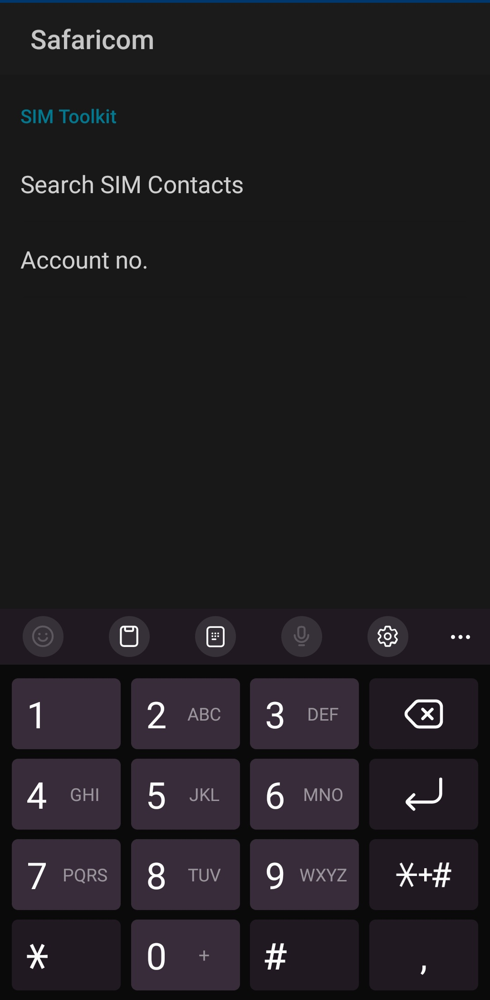
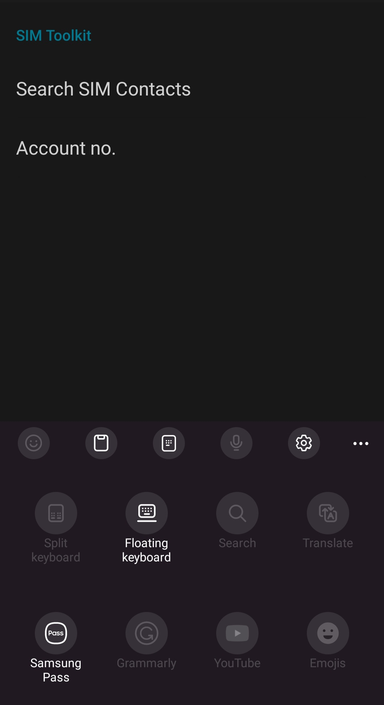
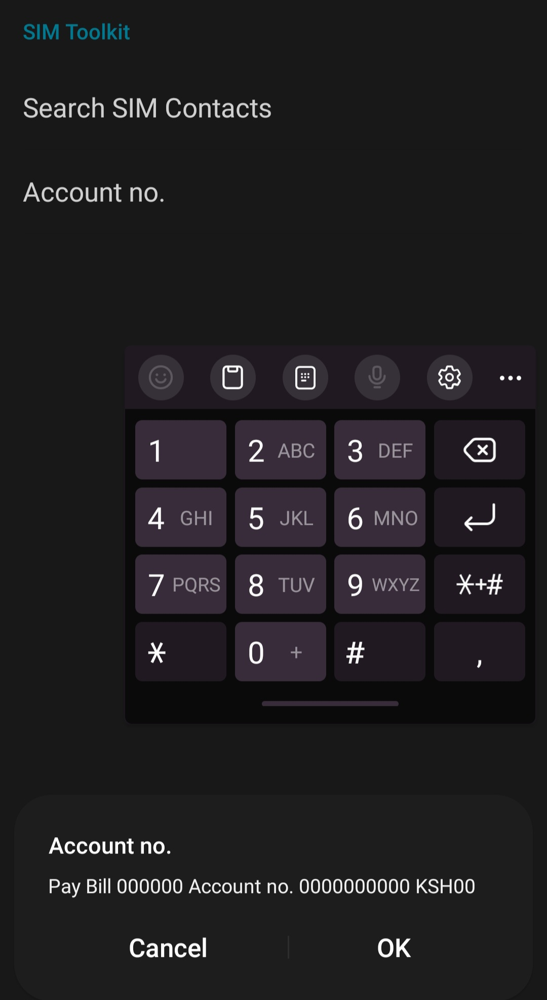

How to Solve the Issue of M-Pesa Not Letting You Finish Your Transaction
M-Pesa is a popular mobile money transfer service in many countries, including Kenya, Tanzania.It's a convenient way to send and receive money, pay bills, and purchase goods and services. However, some users may encounter an issue where M-Pesa does not let them finish their transaction. This can be frustrating, especially when you need to complete the transaction urgently. Fortunately, there is a simple solution to this problem.

The issue of M-Pesa not letting you finish your transaction usually occurs when your are about to press okay to finish the transaction and the keyboard does not disappear for you to finish the transaction. This is usually the final step.This is because the "okay" button is required to complete the transaction, and if it's not visible, you cannot proceed. To solve this problem, you need to switch to a floating keyboard, which will reveal the "okay" button.
To switch to a floating keyboard, follow these steps:

Step 1: Open the M-Pesa app on your phone and start the transaction process.
Step 2: When you reach the point where you need to enter your PIN or confirm the transaction, press okay the keyboard will not disappear to fix this look at your keyboard.
Step 3: Look for the three dots (ellipsis) icon located on the keyboard. The position of the icon may vary depending on the type of keyboard you are using.
Step 4: Tap on the three dots icon to reveal a menu of keyboard options.
Step 5: Select "Floating keyboard" from the menu. This will change the keyboard's position and size, making the "okay" button visible.

Step 6: press okay and finish your transaction. if okay is still not visible move the keyboard to the top.
That's it! By switching to a floating keyboard, you can solve the issue of M-Pesa not letting you finish your transaction. This is a quick and easy solution that can save you time and frustration when using the service.